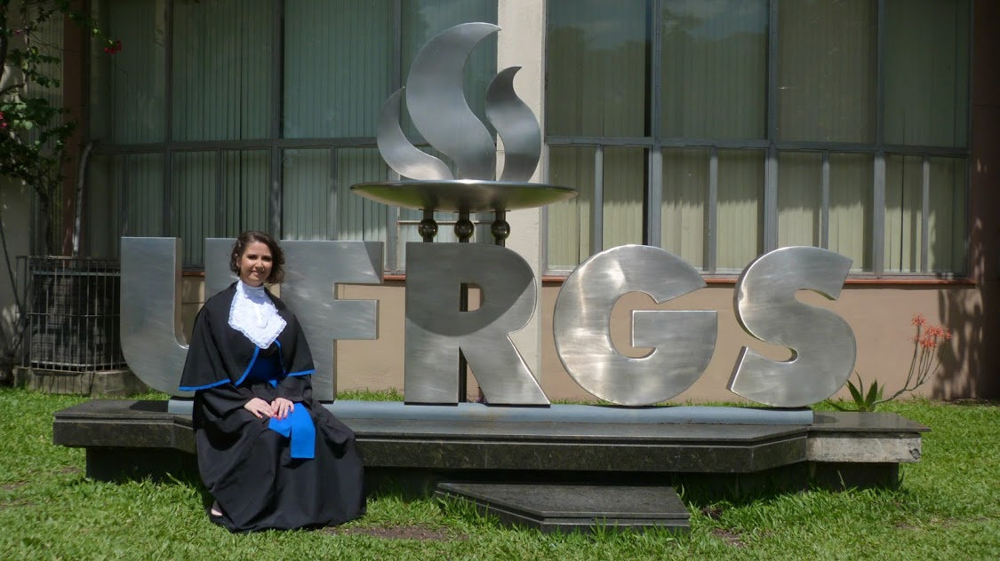
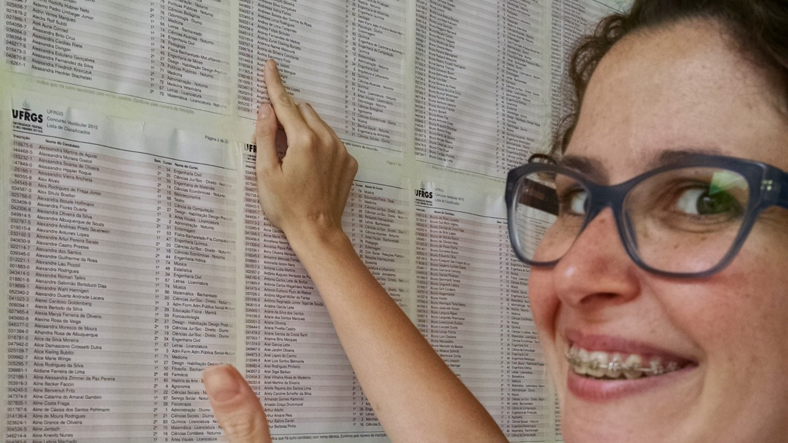
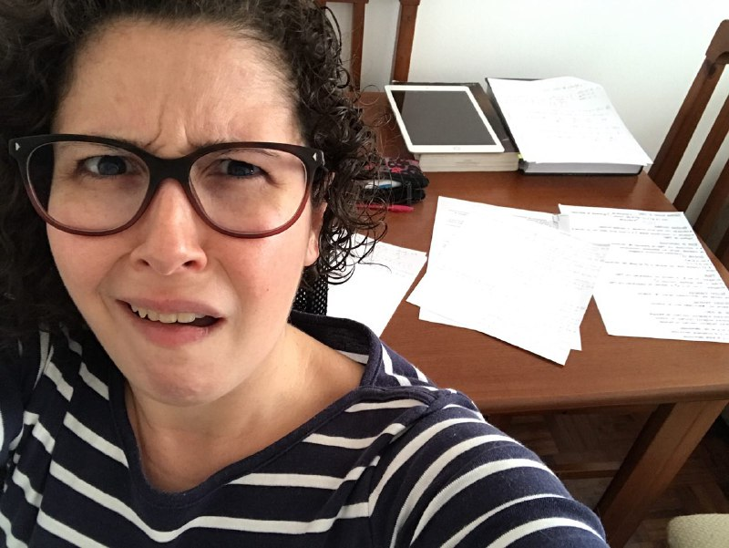
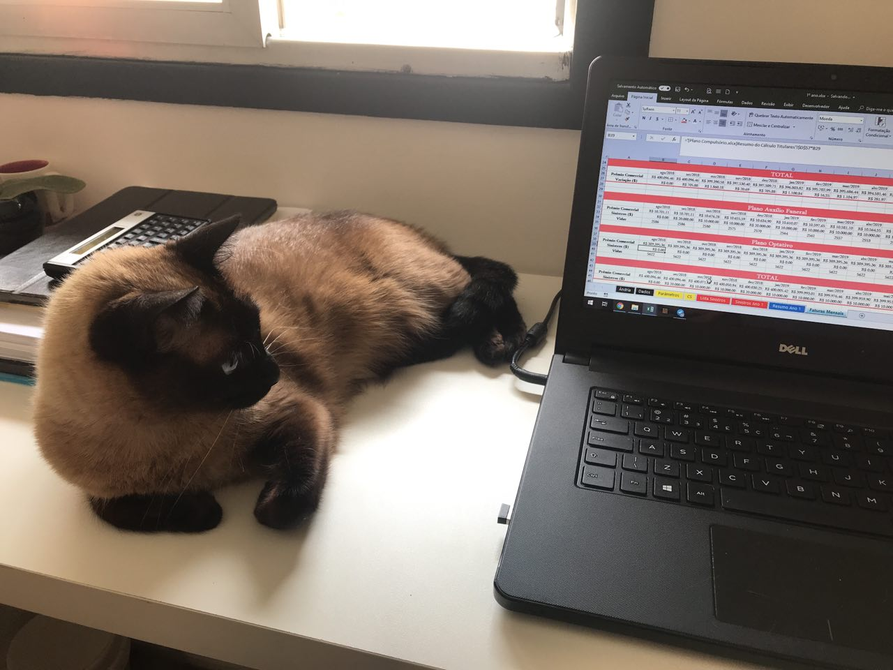

Ciências Atuariais - UFRGS 2019
Não foi fácil, não foram poucos os obstáculos, mas também não foi pouco o empenho :)

Trajetória
Vestibular 2015
Largar tudo e recomeçar, aqui foi o ponto de partida.

Vida de estudante
Nem tudo são flores nessa vida de estudante, não lembrava que era tão puxado assim ser NERD. Não basta estudar, tem que ser "A"!

Ajudantes
Ainda bem que não estava sozinha, minha companheira de estudos Zelda, a primeira GAtuária da UFRGS, sempre estava disposta a me ajudar não importando a hora ou o dia.


Finalmente!
Que bom que posso dividir contigo essa minha conquista.
Colação de grau
- Data e hora: 21/03/2019 às 18 horas
- Local: Salão de Atos da UFRGS, Av. Paulo Gama, 110 - Bom Fim, Porto Alegre - RS